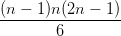
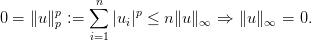
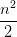
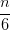
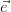

4.4 Fatoração LU
Considere um sistema linear onde a matriz A é densa5 . Para resolver o sistema, podemos transformar a matriz A nas matrizes L, triangular inferior, e U, triangular superior de tal forma que A = LU.
Sendo assim o sistema pode ser reescrito tal que
| Ax | = b | (4.29) |
| (LU)x | = b | (4.30) |
| L(Ux) | = b | (4.31) |
| Ly = b | e Ux = y | (4.32) |
A matriz U da fatoração6 LU é a matriz obtida ao final do escalonamento da matriz A.
A matriz L inicia igual a identidade I. Os elementos da matriz L são os múltiplos do primeiro elemento da linha de A a ser zerado dividido pelo pivô acima na mesma coluna.
Por exemplo, para zerar o primeiro elemento da segunda linha de A, calculamos
Note que usaremos Ai,: para nos referenciarmos a linha i de A. Da mesma forma, se necessário usaremos A:,j para nos referenciarmos a linha j de A.
Para zerar o primeiro elemento da terceira linha de A, temos

Repetimos o processo para as próximas colunas, escalonando a matriz A e coletando os elementos Lij abaixo da diagonal7 .
4.4.1 Algoritmo para fatoração LU
O algoritmo para fatoração LU pode ser escrito como
2. n=size(A,1)
3. L=eye(n,n)
4. for j=1:n-1
5. for i=j+1:n
6. L(i,j )=A(i,j)/A(j,j)
7. A(i,j+1:n)=A(i,j+1:n)-L(i,j)*A(j,j+1:n)
8. A(i,j )=0
9. end
10. end
11. endfunction
Custo computacional
Podemos analisar o custo computacional reduzindo o problema em problemas menores.
Na linha 4, iniciamos com j = 1. Desta forma i varia de 2 até n na linha 5.
A linha 6 terá sempre 1 flop.
A linha 7, com j = 1 tem um bloco de tamanho 2:n contabilizando n− 1 flops do produto e n − 1 flops da subtração.
Nas linhas 6-8 são feitas (2(n− 1) + 1) = 2n− 1 flops independente do valor de i. Como i varia de 2 até n, teremos que o bloco é repetido n − 1 vezes, ou seja, o custo das linhas 5-9 é
 | (4.33) |
Voltamos a linha 4 quando j = 2. Das linhas 6-8 teremos n − 2 flops (o bloco terá um elemento a menos) que será repetido n − 2 vezes, pois i=3:n, ou seja,
 | (4.34) |
Para j = 3, temos 2(n − 3)2 + (n − 3).
Para j = n − 2, temos 2(2)2 + 2.
Finalmente, para j = n − 1, temos 2 ⋅ 12 + 1.
Somando todos esses custos, temos
| (n − 1) + 2(n − 1)2+ | (n − 2) + 2(n − 2)2 + ... + (2) + 2(2)2 + 1 + 2 ⋅ 1 | ||
| = | ∑ k=1n−12k2 + k | ||
| = | 2 ∑ k=1n−1k2 + ∑ k=1n−1k | ||
| = | 2 +  | ||
| = |  − − flops. |
4.4.2 Custo computacional para resolver um sistema linear usando fatoração LU
Para calcularmos o custo computacional de um algoritmo completo, uma estratégia é separar o algoritmo em partes menores mais fáceis de calcular.
Para resolver o sistema, devemos primeiro fatorar a matriz A nas matrizes L e U. Vimos que o custo é

Depois devemos resolver os sistemas Ly = b e Ux = y. O custo de resolver os dois sistemas é (devemos contar duas vezes)

Somando esses 3 custos, temos que o custo para resolver um sistema linear usando fatoração LU é
Quando n cresce, prevalessem os termos de mais alta ordem, ou seja,

4.4.3 Custo para resolver m sistemas lineares
Devemos apenas multiplicar m pelo custo de resolver um sistema linear usando fatoração LU, ou seja, o custo será


Porém, se estivermos resolvendo n sistemas com a mesma matriz A (e
diferente lado direito  para cada sistema) podemos fazer a fatoração LU uma
única vez e contar apenas o custo de resolver os sistemas triangulares
obtidos.
para cada sistema) podemos fazer a fatoração LU uma
única vez e contar apenas o custo de resolver os sistemas triangulares
obtidos.
Custo para fatoração LU de A:  −
− −
− .
.
Custo para resolver m sistemas triangulares inferiores: mn2.
Custo para resolver m sistemas triangulares superiores: mn2.
Somando esses custos obtemos


4.4.4 Custo para calcular a matriz inversa de A
Como vemos em Álgebra Linear, um método para obter a matriz A−1 é realizar o escalonamento da matriz [A|I] onde I é a matriz identidade. Ao terminar o escalonamento, o bloco do lado direito conterá A−1.
Isto é equivalente a resolver n sistemas lineares com a mesma matriz A e os vetores da base canônica i = [0,...,0,1,0,....0]T tal que
 i serão as colunas da matriz A inversa, já que AX = I.
i serão as colunas da matriz A inversa, já que AX = I.
O custo para resolver esses n sistemas lineares foi calculado na seção anterior como